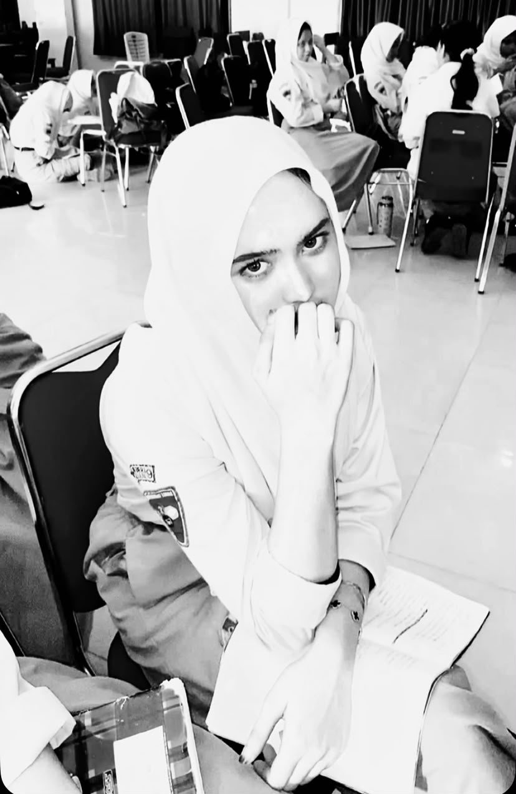
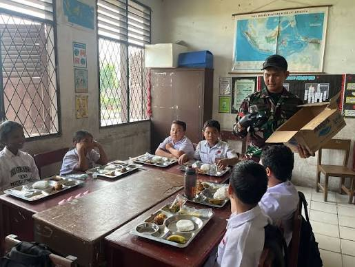
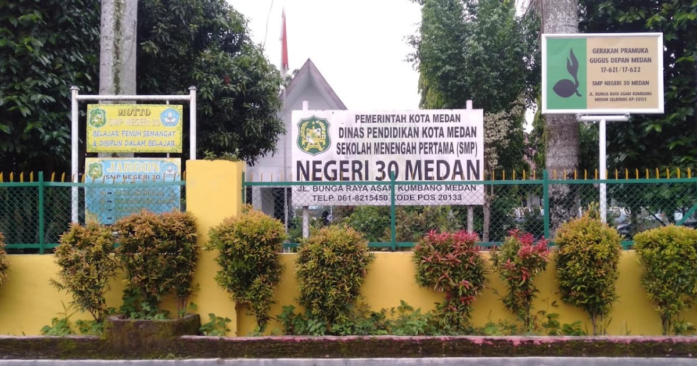
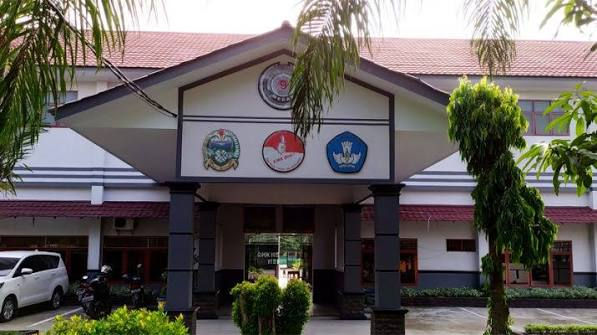

XI RPL 3
Motto : Hidup penuh lika liku, tetapi saya tidak akan rapuh
SD

SMP

SMK

Pendidikan formal saya dimulai dari tingkat dasar, berlanjut ke jenjang menengah pertama, dan saat ini sedang menempuh studi kejuruan di SMK dengan minat pada bidang Rekayasa Perangkat Lunak (RPL).
| No | Organisasi / Ekstrakulikuler | Keterangan |
|---|---|---|
| 1 | OSIS (Sekbid Kebersihan) | Bertanggung jawab memelihara keasrian lingkungan sekolah serta mengedukasi siswa mengenai pentingnya kedisiplinan kebersihan di area kampus sekolah. |
| 2 | Paskibra | Aktif dalam latihan baris-berbaris untuk melatih ketahanan fisik, pembentukan kepemimpinan, dan menjadi bagian dari tim pengibar bendera. |
| No | Prestasi | Keterangan |
|---|---|---|
| - | - | - |
✓ Menonton Film
Gemar mengisi waktu luang dengan menonton film untuk melatih pola pikir kritis dan menikmati jalan cerita yang menarik.
Film Favorit: Pengabdi Setan 2: Communion
Instagram : @ilvii_ryn
Whatsapp : https://wa.me/6283151296969
© 2026 Curriculum Vitae Saya-XI RPL 3